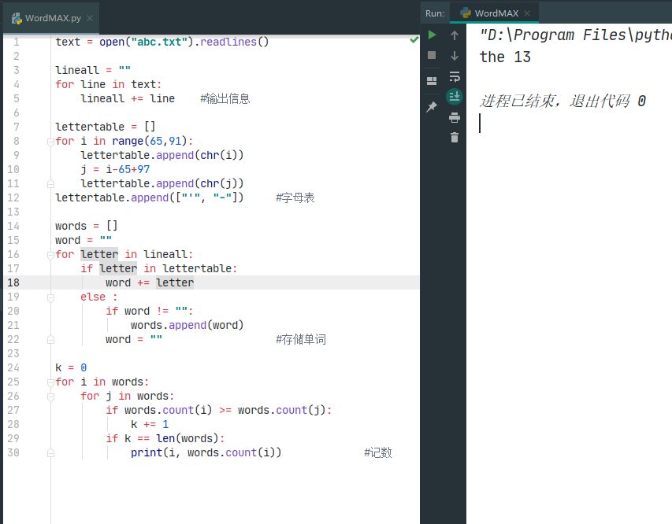

4月26
记事本中的 python 逻辑
我觉得编程语音是一种神奇的东西，尤其是我学习了python后感觉世界变得神奇，所以我将用GitHub来记录我学习python的每个代码。
今天分享的是一个文本分析代码，这个代码可以分析同目录下 abc.txt(点击下载该文件) 内的出现最多次数的单词，这其实不是简单的写法，用字典函数比较简单的，但用列表和字符串记录有助于锻炼思维。接下来看代码吧！该代码源文件点击下载：WordMAX.py.
x311text = open("abc.txt").readlines()
2
3
lineall = ""
4
for line in text:
5
lineall += line #输出信息
6
7
lettertable = []
8
for i in range(65,91):
9
lettertable.append(chr(i))
10
j = i-65+97
11
lettertable.append(chr(j))
12
lettertable.append(["'", "-"]) #字母表
13
14
words = []
15
word = ""
16
for letter in lineall:
17
if letter in lettertable:
18
word += letter
19
else :
20
if word != "":
21
words.append(word)
22
word = "" #存储单词
23
24
k = 0
25
for i in words:
26
for j in words:
27
if words.count(i) >= words.count(j):
28
k += 1
29
if k == len(words):
30
print(i, words.count(i)) #记数
运行结果：

由显示可以看出来在我自己的 data.txt 中出现次数最多的单词是“the”, 总共出现13次，但是这是不正确的，因为python区分大小写，也即是它认为The与the不是同一个，所以有待改进。
今天就到这里，我就会不定期更新哟！bye~~
兔子出品必属精品